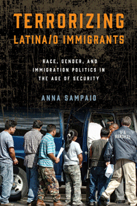

<body bgcolor="#FFFFFF" text="#000000" link="#0000FF" vlink="#CC0000" alink="#CC0000"><center><hr width="350" size="1" align="center" noshade>A comprehensive analysis of changes in immigration policy, politics, and enforcement since 9/11<hr width="350" size="1" align="center" noshade><p><a href="https://cdcshoppingcart.uchicago.edu/Cart/ChicagoBook.aspx?ISBN=9781439912850&&PRESS=temple" target="_top">Buy this book!</a> | <a href="https://cdcshoppingcart.uchicago.edu/Cart/Cart.aspx?PRESS=temple" target="_top">View Cart</a> | <a href="https://cdcshoppingcart.uchicago.edu/Cart/Cart.aspx?PRESS=temple" target="_top">Check Out</a></p><p></p></center><!--none//--><h1>Terrorizing Latina/o Immigrants</h1>
<H2>Race, Gender, and Immigration Politics in the Age of Security</H2>
<h3>Anna Sampaio</h3>
<P>cloth 1-4399-1285-8 $75.50, Sep 15, <FONT COLOR=#990033>Available</FONT>
<br>paper 1-4399-1286-6 $29.95, Sep 15, <FONT COLOR=#990033>Available</FONT>
<br>Electronic Book 1-4399-1287-4 $29.95 <FONT COLOR=#990033>Available</FONT>
<BR> 230 pp
6 x 9
1&nbsp;table 1&nbsp;halftone
</P><h3 align="center"><P><font color="#996633">American Political Science Association's Latino Politics Best Book Prize,
2016</font></P>
</H3>
<BLOCKQUOTE><I>"</i>Terrorizing Latina/o Immigrants<i> makes a compelling case that government policies are thoroughly implicated in processes of racialization and gendering that mark some citizens as worthy of protection and others as dangerous threats to national security. In showing how recent immigration and securitization policies blur the boundaries between citizens and immigrants, and between immigrants and terrorist threats, Sampaio provides powerful lessons about the fragility of constitutional rights when Congress, the executive branch, and the courts concur that the nation�s highest priority is security. This comprehensive empirical study sheds new light on the complex integration of immigration and securitization policies in the aftermath of September 11."</i> <br>&#151<b>Mary Hawkesworth</b>, Distinguished Professor of Political Science and Women�s and Gender Studies, Rutgers University</I></BLOCKQUOTE>
<p>Immigration politics has been significantly altered by the advent of America�s war on terror and the proliferation of security measures. In her cogent study, <i>Terrorizing Latina/o Immigrants</i>, Anna Sampaio examines how these processes are racialized and gendered and how they impose inequitable burdens on Latina/o immigrants. She interrogates the rise of securitization, restrictive legislation, and the return of large-scale immigration raids and describes how these re-articulate and re-inscribe forms of racial and gender hierarchy.
<p><i>Terrorizing Latina/o Immigrants</i> demonstrates how the ascendance of America as a security state serves as a template to scrutinize, harass, and encumber immigrants while also reconfiguring citizenship. Sampaio uses intersectional analysis coupled with theoretical and empirical approaches to develop a critical framework for analyzing current immigration politics.
<p>Sampaio provides a sustained and systematic examination of policy and enforcement shifts impacting Latinas/os. Her book concludes with an examination of immigration reform under the Obama administration, contrasting the promise of hope and change with the reality of increased detentions, deportations, and continued marginalization.
<BR>&nbsp;<h2>Excerpt</h2><P>Excerpt available at <a href="http://www.temple.edu/tempress">www.temple.edu/tempress</a></p>
<BR>&nbsp;<h2>Reviews</h2>
<p><i>"</i>Terrorizing Latina/o Immigrants<i> is a wonderful addition to the literature on the social constructions of policy target populations. The sophisticated command of both case law and national and state policy is particularly helpful in understanding the complex trends in U.S. immigration policy in recent decades. Sampaio clearly and convincingly articulates her argument on the impact of federal-level anti-terror policies on the everyday experiences of Latinas/os, and her identification of a racialized/gendered set of discursive moves in the years surrounding 9/11 is especially strong."</i><br>&#151<b>Ange-Marie Hancock</b>, Associate Professor of Political Science and Gender Studies, University of Southern California
<p><i>"In this timely book, Sampaio presents important legislation and public policy shifts related to immigration, focusing on how these processes are racialized and gendered and demonstrating how they impact Latina/os.... Each chapter presents theories, key concepts, and empirical issues critical to understanding immigration and security studies.... A must read for anyone interested in security and immigration studies and Latina/os communities.... Summing Up: Highly recommended."</i>
<br>&#151<b><i>Choice</i></b>
<p><i>"</i>Terrorizing Latina/o Immigrants<i> is remarkably readable, comprehensive, and relevant overview of the history of restrictive US immigration policies and the more recent securitization of immigration enforcement since the War on Terror. The book rightly seizes upon changes in immigration law before 9/11 (such as the 1996 Illegal Immigration Reform and Immigrant Responsibility Act) as foreshadowing the unprecedented extension of executive authority post-9/11.... Sampaio�s book usefully puts race and gender at the forefront of analyzing the expansion of US security power in the realms of immigration enforcement and the War on Terror. I confidently recommend it to anyone eager for a critical and lucid understanding of US immigration control in a period of political hyperbole and resurgent anti-immigrant discourse." </i>
<br>&#151<b><i>International Migration Review</i></b>
<BR>&nbsp;<h2>Contents</h2><P>
<P>Preface and Acknowledgments
<br>
<br>1. Reconfiguring Race and Gender in the War on Terrorism
<br>
<br>2. Masculinist Protectionism, Racialized Demonization, and the Formation of the Contemporary Security Regime
<br>
<br>3. Racialization of Latinas/os within American Immigration Law and Policy
<br>
<br>4. Securitizing Immigration Legislation
<br>
<br>5. Terrorizing Immigrants: The Return of Large-Scale Raids and Roundups and Their Impact on Latina/o Communities
<br>
<br>6. Security and Citizenship: �Enemy Combatants� and the Cases of John Walker Lindh, Yaser Hamdi, and Jos� Padilla
<br>
<br>7. The End of Terror? A New Administration and a New Chapter in Immigration Politics
<br>
<br>Notes
<br>Bibliography
<br>Index
</P><BR>&nbsp;<H2>About the Author(s)</H2>
<P><b>Anna Sampaio</b>, Associate Professor of Ethnic Studies and Political Science and Director of Ethnic Studies at Santa Clara University, is the co-editor (with Carlos V�lez-Ib��ez) of <i>Transnational Latina/o Communities: Politics, Processes, Cultures</i>.</P>
<BR><H2>Subject Categories</H2>
<p><A HREF="/tempress/latino.html" TARGET="_top">Latino/a Studies</a>
<BR><A HREF="/tempress/political.html" TARGET="_top">Political Science and Public Policy</a>
<BR><A HREF="/tempress/gender.html" TARGET="_top">Gender Studies</a>
</p>
<p align="center"><a href="https://cdcshoppingcart.uchicago.edu/Cart/ChicagoBook.aspx?ISBN=9781439912850&&PRESS=temple" target="_top">Buy this book!</a> | <a href="https://cdcshoppingcart.uchicago.edu/Cart/Cart.aspx?PRESS=temple" target="_top">View Cart</a> | <a href="https://cdcshoppingcart.uchicago.edu/Cart/Cart.aspx?PRESS=temple" target="_top">Check Out</a></p><p><font face="Arial" size="1"><a href="copyright.html" onMouseOver="window.status='Web Copyright Policy';return true;" onMouseOut="window.status=''" title="Web Copyright Policy">&copy;</a> 2016 <a href="http://www.temple.edu" target="new" onMouseOver="window.status='Link to Temple University home page';return true;" onMouseOut="window.status=''" title="Link to Temple University home page">Temple University</a>. All Rights Reserved. http://www.temple.edu/tempress/titles/2376_reg.html</font></p>